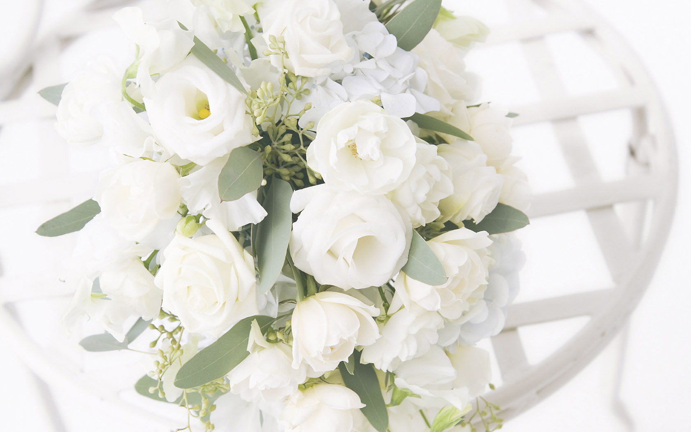
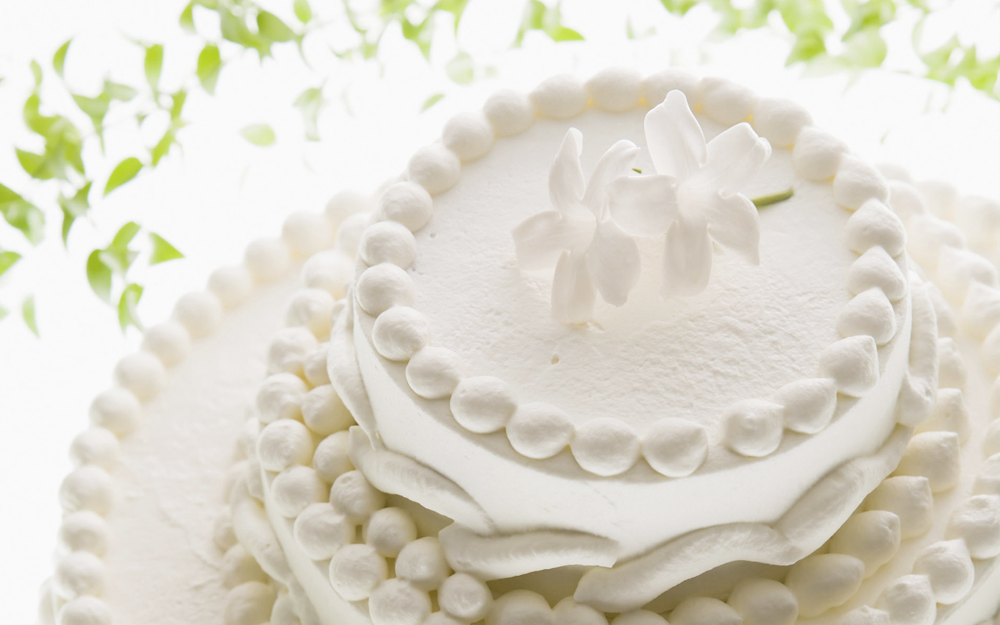
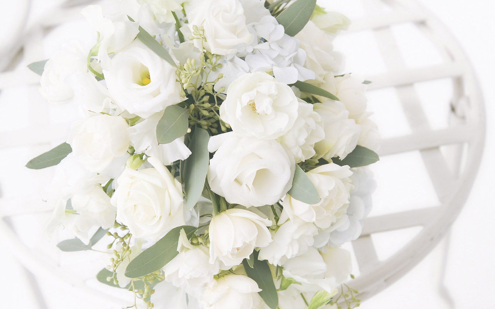
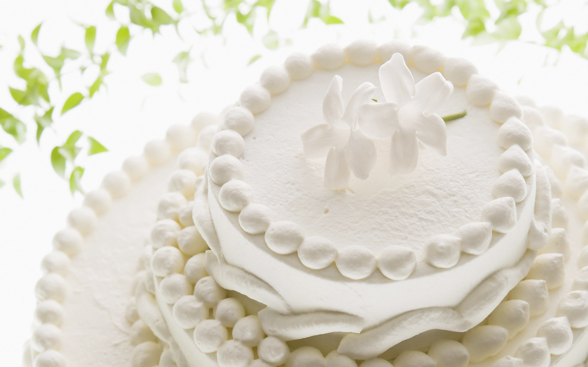

Wedding
Cuillere(キュイエール)では極上フレンチをベースにご希望のオプションを自由にプラスできます。
親族のみのお披露目会や本格的なウェディングまで幅広いスタイルに対応可能です。
モダンな建物に象徴される「無機質な清潔感」をコンセプトにしたクールかつスタイリッシュな店内は、大人の心を揺さぶる極上の空間。
昼は吹き抜けのテラスに太陽の光がふりそそぎ、夜は間接照明の温かみのある光がくつろぎの空間を演出します。
日常の生活を忘れてしまうような、ゆったりと時が流れる空間の中で、心のこもったサービスと、素材を大切にした繊細な料理をお楽しみいただけます。
婚礼料理はシェフと直接打合わせしてお二人のオリジナルメニューをご提案いたします。
ウェディングを希望するお二人をプライダル経験豊富なスタッフがサポート。
挙式会場への新郎、新婦の無料送迎。
貸切、ナイトウェディング、少人数対応等ご希望を是非お聞かせください。